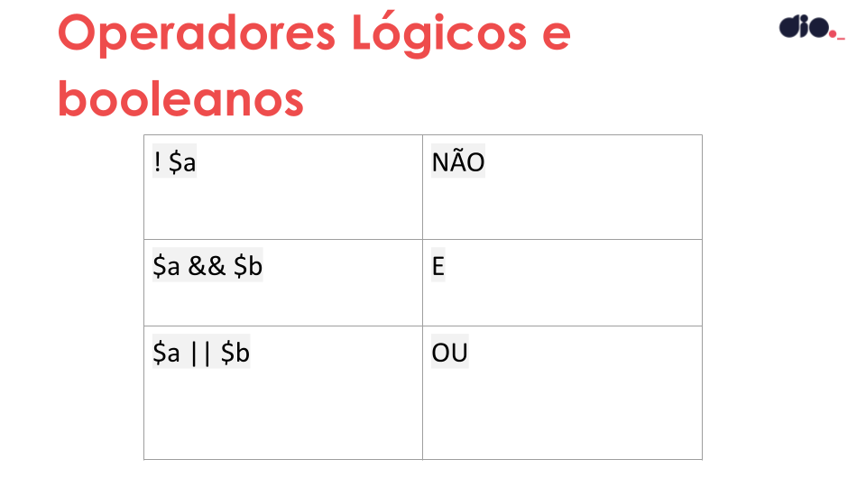

GUARDANDO AS INFORMAÇÕES E ANOTAÇÕES DE ESTRUTURAS CONDICIONAIS E DE REPETIÇÃO EM PHP
O objetivo desse curso é nos das a total compreesão
e aplicação na prática de toda lógica relacionada
a estruturas condicionais e de repetição.
Domínio de um conteúdo base para entendimento
sólido de programação.
Aula 01 - Operadores Lógicos e Booleanos em PHP
Ela serve para fazer comparações que podem ou não retornar valores Booleano(V ou F).
